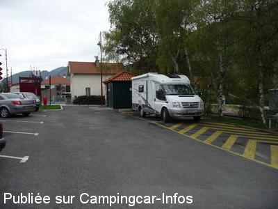
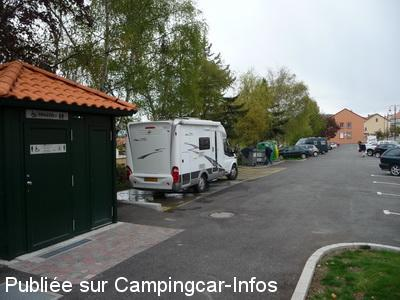

ASN = Aire de services avec stationnement nuit possible de :
VEYNES
(N° 450)
Accès/adresse :
Avenue du Commandant Dumont
Place du 19 Mars
05400 VEYNES
Place du 19 Mars
05400 VEYNES
Latitude : (Nord) 44.53316° Décimaux ou 44° 31′ 59′′
Longitude : (Est) 5.82206° Décimaux ou 5° 49′ 19′′
Tarif : Gratuit
Type de borne : Artisanale
Services :


Tous commerces au centre ville à 1.500 mètres
Autres informations :
Ouvert de mars à novembre
Tel : +33(0)492 581 022

Le 02/05/2010 par Xtian74

Le 02/05/2010 par Xtian74
de
coco
le 29/07/2013 :
§
Bonjour,
Venant de passer à Veynes, j'ai pu profiter gratuitement, il faut le signaler, de l'aire de vidange et de refaire mon plein d'eau.
Merci à la municipalité et à son personnel pour la tenue de cette aire.
§
Bonjour,
Venant de passer à Veynes, j'ai pu profiter gratuitement, il faut le signaler, de l'aire de vidange et de refaire mon plein d'eau.
Merci à la municipalité et à son personnel pour la tenue de cette aire.
de
le 01/08/2011 :
Bonjour.
L'aire de service est en fonction uniquement en saison hors gel. amitiés.
Bonjour.
L'aire de service est en fonction uniquement en saison hors gel. amitiés.
de
Hénouil f
le 24/03/2011 :
De passage le 18.03.2011 pas de robinet il est enlever donc pas d'eau !!
De passage le 18.03.2011 pas de robinet il est enlever donc pas d'eau !!
de
loulou38
le 30/09/2010 :
Aire bruyante, entre route et train, possibilité de passer la nuit au bord du lac des Iscles, à 2 km en allant sur Serres.
Aire bruyante, entre route et train, possibilité de passer la nuit au bord du lac des Iscles, à 2 km en allant sur Serres.
de
thierry76
le 27/05/2010 :
Stationnement difficile entre CC & voitures. De plus, au bord d'une route passagère, le calme n'est pas garanti. Cependant,aire de services fonctionnelle & parking qui a le mérite d'exister.
Stationnement difficile entre CC & voitures. De plus, au bord d'une route passagère, le calme n'est pas garanti. Cependant,aire de services fonctionnelle & parking qui a le mérite d'exister.
de
SERRE ALBERT
le 11/02/2009 :
Bonjour. L'aire située place du 19 mars a été entièrement rénovée. Le batiment minable a disparu et a été remplacé par un WC chimique en inox. Les vidanges des eaux grises et noires se font toujours à la même place. Le plein d'eau propre se fait à proximité du bâtiment en inox. Par contre, les canalisations ne sont pas hors gel, donc fermées l'hiver. On peut toujours faire ses vidanges, en vidant d'abord sa cassette et en utilisant ses eaux grises pour rincer la dite cassette. Amitiés.
Bonjour. L'aire située place du 19 mars a été entièrement rénovée. Le batiment minable a disparu et a été remplacé par un WC chimique en inox. Les vidanges des eaux grises et noires se font toujours à la même place. Le plein d'eau propre se fait à proximité du bâtiment en inox. Par contre, les canalisations ne sont pas hors gel, donc fermées l'hiver. On peut toujours faire ses vidanges, en vidant d'abord sa cassette et en utilisant ses eaux grises pour rincer la dite cassette. Amitiés.
de
SERRE ALBERT( brutus)
le 22/04/2008 :
L'aire de services située sur le parking, entrée de Veynes, venant de Gap, a été entièrement refaite. Les services sont hors gel, contrairement à autrefois. Les WC sont très propres. Tout est gratuit. Il n'y a pas de branchement électrique. Le parking n'est pas exclusivement réservé aux CC. Bruyant la nuit, route principale de la ville.
L'aire de services située sur le parking, entrée de Veynes, venant de Gap, a été entièrement refaite. Les services sont hors gel, contrairement à autrefois. Les WC sont très propres. Tout est gratuit. Il n'y a pas de branchement électrique. Le parking n'est pas exclusivement réservé aux CC. Bruyant la nuit, route principale de la ville.